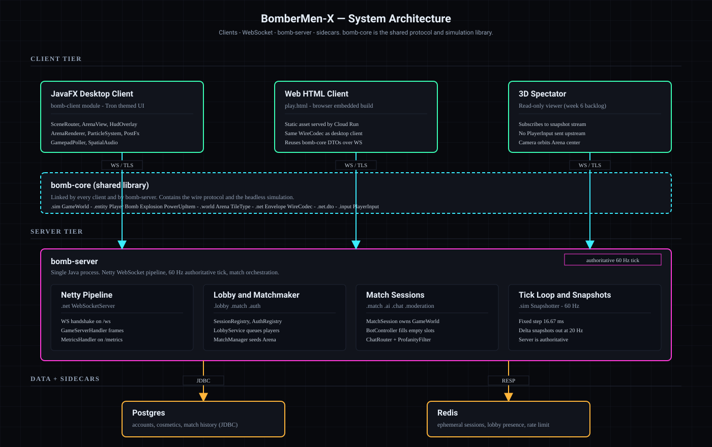

The three modules
bomb-core is a pure Java 17 library with no I/O. It holds the game model
(Arena, Player, Bomb, Explosion, PowerUpItem),
the deterministic simulation (GameWorld, Snapshotter),
and the wire protocol (Envelope, MessageType, WireCodec plus roughly twenty-five DTOs).
Both runtime modules import it; nothing in core imports back.
bomb-server is a small Netty WebSocket server that runs as a single Cloud Run container.
BombServerApplication composes WebSocketServer, SessionRegistry,
MatchManager, AuthRegistry, LobbyService, ChatRouter,
and ServerConfig. The handler GameServerHandler routes every inbound envelope to one of those
services. Each MatchSession owns a GameWorld from bomb-core and steps it at 60 Hz.
bomb-client is a JavaFX 21 desktop application: ClientLauncher bootstraps the
AgeGate, then a SceneRouter wired with TronTheme swaps between
MainMenuView, LobbyView, RankingsView, and the in-game
ArenaView with its HudOverlay. GameClient is the single WebSocket adapter
every scene shares. The presentation/play.html page is a second, browser-based client that speaks
the exact same wire protocol over the native WebSocket API.
The wire boundary
The only contract between client and server is the JSON envelope defined in
com.bombermenx.core.net. Clients open WSS, exchange
HELLO/WELCOME, authenticate, join a lobby, and then enter the 60 Hz
SNAPSHOT loop with INPUT going the other way. Because both ends compile against the same
WireCodec the protocol cannot drift between modules.
Where data lives
Postgres 16 (Cloud SQL or self-hosted) stores ranked match history, player profiles, and
cosmetic ownership. It is reached over JDBC from bomb-server only — clients never speak to the
database directly. Redis 7 (Memorystore or co-located in the Compose stack) holds short-lived
session state, per-IP rate-limit counters, and a pub/sub channel that lets multiple server instances coordinate
if we ever scale beyond one. Both sidecars are amber on the diagram to signal they are infrastructure, not part
of the gameplay contract.
Build & deploy
GitHub Actions builds the server image, pushes it to Artifact Registry, and deploys via
deploy-cloudrun.yml. The same image runs in a docker-compose stack for development and for the
fallback demo. Free-tier sizing is 512 MiB / 1 vCPU / max-instances=1 — enough for one concurrent
4-player match plus rankings traffic.